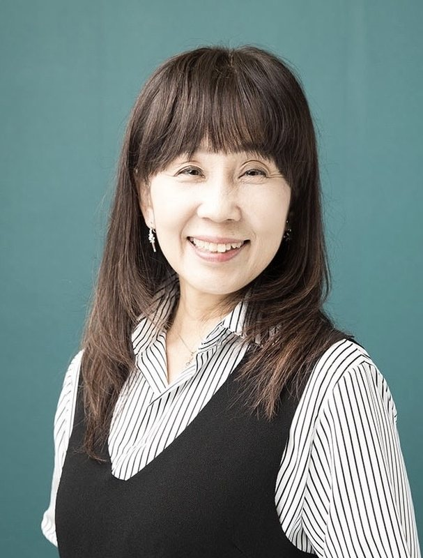
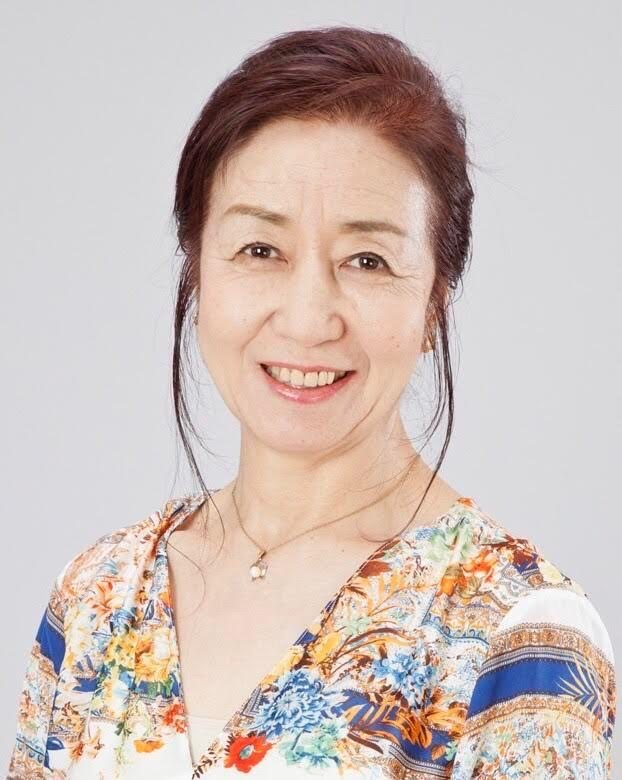
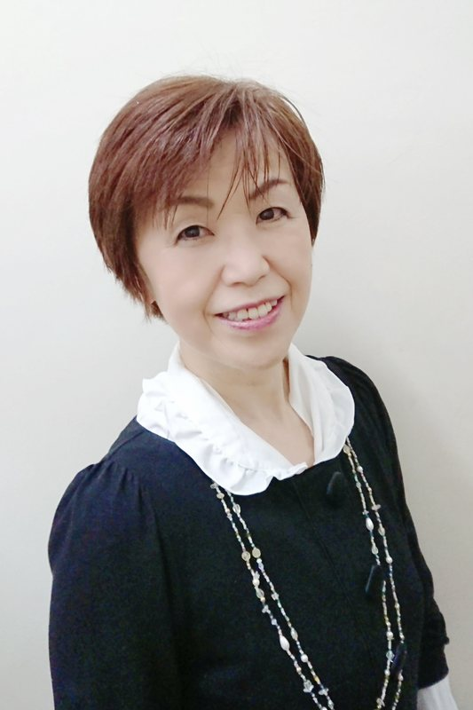
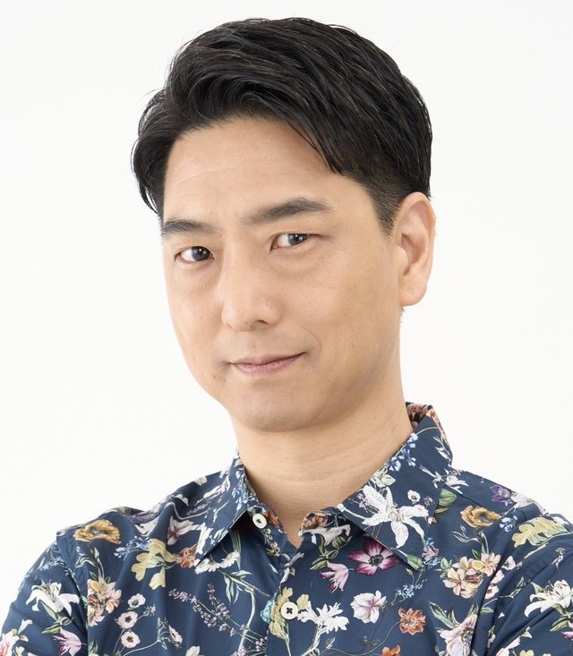
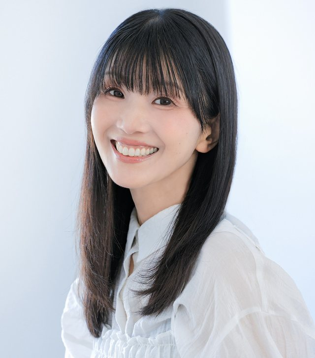
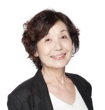
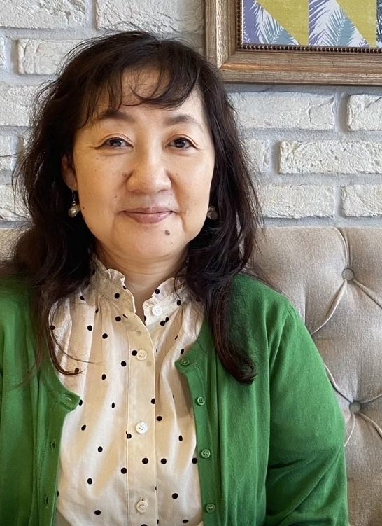
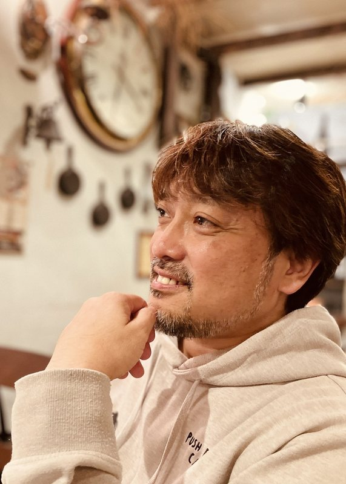
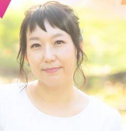

現在満席
発声・滑舌クラス
講師：滝沢ロコ（ぷろだくしょんバオバブ）
- 日時
- 土曜 14:00〜16:00・月2回
- 回数
- 全12回
- 受講料
- 62,700円（税込）
- 設備費
- 10,000円（税込）
- 分割払い
- 10,450円（税込）×6回
- 対象
- 経験不問
S&S Entertainment Studio 声優コース
渋谷のスタジオで開講する声優専門コース。
レッスンは基本月2回、3・4・6か月ごとの更新制だから、
養成所・専門学校・仕事と並行して通えます。
S&S Entertainment Studio 声優コースは、
演技力・基礎技術・業界理解を
“今の自分に必要な形”で選び、
豪華講師陣と専任スタッフのサポートのもと、
事務所や現場に
「見つけられる声優」
へと成長するための、
声優・声優志望者のための
総合育成スタジオです。
現役声優と音響監督・演出家が直接指導
受講生対象に複数事務所のマネージャーを招いて開催（一定期間の受講者が対象）
3・4・6か月ごとの更新制（自動更新なし）、複数クラスの併用受講も可
担当スタッフと専属ボイストレーナーが連携し、発声・ボイスサンプル・オーディション相談、メンタル面まで対応
学びたい分野や経験のレベルに合わせて選べます。複数クラスの併用受講も可能です。
講師：滝沢ロコ（ぷろだくしょんバオバブ）
講師：西村ちなみ（81プロデュース）
講師：勝沼紀義
講師：野村須磨子（ぷろだくしょんバオバブ）
講師：福田如子（CROSS CALL）
講師：こぶしのぶゆき（賢プロダクション）
講師：勝沼紀義
講師：羽鳥靖子（マウスプロモーション）
講師：ディレクター陣（今期は下記3名）
講師：島本須美
個別対応
第一線で活躍する現役声優と、作品づくりの現場を知るディレクター陣が指導します。

島本須美クラス（現在休講中）
フリー
劇団青年座を経て声優として活動。日本を代表する名作に多数出演し、現在もアニメ・吹替え・ナレーションと幅広く活躍中。
代表作『風の谷のナウシカ』ナウシカ役、『ルパン三世 カリオストロの城』クラリス役、『めぞん一刻』音無響子役、『それいけ！アンパンマン』しょくぱんまん役

アドバンスクラス
ぷろだくしょんバオバブ所属
外画吹替えを中心に、アニメ・舞台・語りと多岐にわたり活躍。
代表作『冬のソナタ』『宮廷女官チャングムの誓い』『マトリックス レボリューションズ』『ロード・オブ・ザ・リング』

発声・滑舌クラス
ぷろだくしょんバオバブ所属
声優、舞台俳優、シンガー、演出家。海外ドラマ全盛期から多くの日本語版作品に出演し、語り継ぐ舞台活動も主宰。
代表作『それいけ！アンパンマン』みみせんせい、『ジョーカー』ペニー・フレック、『アバター』モアト
外画吹替えクラス
CROSS CALL所属
洋画・海外ドラマの吹替え出演が多く、舞台でも精力的に活動。
代表作『CSI:科学捜査班』『プリズン・ブレイク』『デスパレートな妻たち』『ER 緊急救命室』
アニメアフレコクラス
賢プロダクション所属
声優デビュー前にサンライズでアニメ制作進行を経験。出演はアニメ・洋画・舞台と多岐にわたる。
代表作『銀の匙』『夏目友人帳』『涼宮ハルヒの憂鬱』『弱虫ペダル』

ベーシッククラス・ナレーションクラス
フリー
アニメ・吹替え・ゲームに加え、ドキュメンタリーやCMのナレーションも多数担当。
代表作『マーベル フューチャー・アベンジャーズ』ホークアイ役、『ドクターハウス』フォアマン役、『龍が如く7 光と闇の行方』蟹江役

表現基礎クラス
81プロデュース所属
1994年デビュー。人気作の主要キャラクターを多数演じ、朗読公演をライフワークとして活動中。
代表作『おじゃる丸』おじゃる丸、『スマイルプリキュア』青木れいか／キュアビューティ、『ポケットモンスター』初代ジュンサー、『ゲゲゲの鬼太郎（4期）』ねこ娘

朗読・吹替えクラス
マウスプロモーション所属
劇団未来劇場を経てマウスプロモーション所属。アニメ・外画・ドラマ、舞台出演も多数。
代表作『ばらかもん』『桜蘭高校ホスト部』『ドラえもん』『ゴースト』
ムーヴマン所属
洋画吹き替えを中心に活躍。落ち着いた役や悪役から、老人・執事役まで幅広く演じる。
代表作『ONE PIECE』『名探偵コナン』『オーシャンズ11』『24』

ディレクターズクラス
吹替演出・映像翻訳
フリーランスで吹替演出（日本語版／英語版）、映像翻訳、声優指導など多岐にわたり活動。
代表作（演出）NHK『上陽賦〜運命の王妃〜』、Netflix『デッド・トゥ・ミー』、NHK『シークレットガーデン』ほか多数

ディレクターズクラス
アニメ監督・演出家・音響監督
東映アニメーション、MAPPAでの勤務を経て、数々の人気アニメで監督・音響監督を務める。
代表作『ONE PIECE』監督、『ゾンビランドサガ』監督・音響監督、『美少女戦士セーラームーンCrystal』監督・音響監督、『スノウボールアース』監督・音響監督

ディレクターズクラス
脚本家・作詞家・音声監修
ゲームやボイスドラマ等の企画・プロデュース・シナリオ執筆に加え、多数の作品の音声監修に携わる。
代表作ゲーム『忍メン』『相棒は英国男子』『無職転生〜ゲームになっても本気だす〜』（いずれもシナリオ監修）、ドラマCDの企画・監修多数
私は現在、大変ありがたいことに某声優事務所の準所属声優として活動しております。
アプリゲームへの出演や、ナレーション・オーディオブック案件も獲得し、少しずつ声優としての階段を上っている状況です。
私がここまでこれたのも、やはりS&S Entertainment Studioの声優コースがあったからだと思います。"マイク前に立って発声する"
"共演者とのコミュニケーション"
"表現におけるマルチタスク"これらは声優としては出来て当たり前の部分ですが、私にとっては非常に難しく、声優を志した当初は「養成所の週1回のレッスンだけで、本当に足りるのか？大丈夫なのか？どうしたらいい？」と絶望していました。
そこで私が思い立ったのが、S&S Entertainment Studioの声優コースを受講することでした。私という人間は、これまでの人生を振り返り自分自身をこのように分析しています。
「環境に慣れることができれば、緊張がほぐれ視野が広がり自分のやりたいことに集中できる」
であるならば、声優コースを受講して数多く本番と同じ環境に身を置くことで、その環境に慣れて自分のやりたいことができるはずだと考えました。そう考えてからは、声優コースの様々なワークショップを受講し、ひたすら繰り返し学んできました。
その成果もあり、養成所の査定で結果を残し、事務所所属に至るまで成長することが出来ました。「上に行く人」とは、常に学び続けられる人だと私は思います。
私の場合はとにかく学びの場を増やして数をこなし、その中で質を高めるヒントを見つけ、それを自分に落とし込み活かしていくことを行なってきました。
もし私の考えに近かったり、「そのやり方を取り入れてみたい！」と思った方がいれば、ぜひS&S声優コースの受講をオススメします。
最後に、声優を志す方々に向けてお伝えしたいことがあります。
「声優を目指す上で、年齢は関係ない」
ということです。
私自身が34歳から演技未経験で志したという身分で、一般的に考えれば「遅い」と思われる部類です。
しかし私自身がそうだったように、年齢というハンデを跳ね除けるだけの技量や魅力を身に付ければ、決して不可能ではありません。
もちろん、並大抵の努力ではその技量や魅力を身に付けることは叶いません。
私も、体調を崩し倒れるまで自分を追い詰めたこともありました。
「それでも声優になりたい！」という強い意志をお持ちであれば、絶対に年齢は関係ありません。そんな方を私は応援しますし、S&S声優コースのスタッフの皆さんも必ずサポートしてくれます。
その強い意志を持って、S&S Entertainment Studioの門を叩いてみてください！私も引き続きここでの学びを活かしてより魅力的な声優になっていこうと思います！
私は月曜アニメアフレコクラスに一年間、基礎のクラスに半年間通っていました。
当時アフレコ経験も少なく、発声・滑舌なども未熟だった私は、S＆Sで一から全てを学ぶことにしました。
まず、アニメアフレコクラスは、私にとって最も刺激的な場でした。
毎回の緊張感は本当の現場のようで、その中で演じることの難しさを知りました。
リハ・本リハ・本番の3回の中で、自分自身で読解を深めていくのがこのクラスの特徴です。
講師の方に言われた通りにやるのではなく、台詞の解釈の仕方や、演出の意図、なぜ自分は見落としたのか、それらの根本まで見つめ直す必要がありました。
毎回のレッスンで反省と改善を繰り返し行なってきた結果、
一年間のレッスンを通じて、私は芝居に向き合う姿勢が、180度変わったと感じています。
レッスンの場での表現はもちろん、日常でも物事の捉え方が変わり、声優としての意識が徐々に高まっていきました。また、基礎のクラスでは、滑舌・発声などを徹底して突き詰めることで、自分に足りない部分を改めて見直すことが出来ました。
このように、2つのクラスを通じて基礎と芝居の両方に磨きをかけることで、私は声優としての表現力を一から学べたと感じています。
その他にも、養成所のことや将来に迷った時に、S&Sのスタッフさんから沢山のサポートを頂きました。
毎週オンラインで行われていた相談会でオーディション対策を教わったり、時には個別に悩み相談を聞いて頂いたりと、声優としての在り方も一から学ぶことが出来ました。そして何より、秋に行われた合同オーディションでは、念願の大手声優事務所の養成所合格を頂く事が出来ました。
一年前の私は、声優としての自信を喪失し、路頭に迷い、将来に不安を抱えていました。
でも、S&Sでの学びと経験があったからこそ、今では声優としての意識を強く持ち、前向きに生きることが出来ています。これからも、S&Sでの経験を活かして、理想の声優になれるように邁進していきます！
先日、初めて外画クラスのレッスンを受講したのですが、今までずっとアニメばかりで、ちゃんと映像ありで吹き替えるというレッスンを受けることもほとんど初めてだったので、最初は戸惑ったのですが、勝手が違うというか、同じお芝居でも今までやってきたこととは全然質が違っていて、他の方のお芝居を見て聞いているだけで大変勉強になりました！
クラスの皆さんのレベルが高く精鋭揃いで、ここまで自分は出来ていないということが明白にわかりました。こんなに刺激を受けたのは、養成所に入った時以来だと思います。今までになかった意識の向け方を学ぶことができ、よりリアルな表現を追求していきたいと思いました。
その日は初めてのことばかりで戸惑いもあり、あまりレッスン内で主張できなかったのですが、次回からは初回のレッスンで学んだことも活かし、準備してレッスンに挑もうと思います！
ほとんど踏み込んだことのない畑で一から吸収するという感じで、今後のレッスンもとても楽しみです！
フォームから申込（希望クラスにチェック）
送信後すぐに自動返信メールが届く
3日以内に担当スタッフから連絡し、面談日程を決定
面談のうえ受講スタート（見学・体験も同じフォームから）